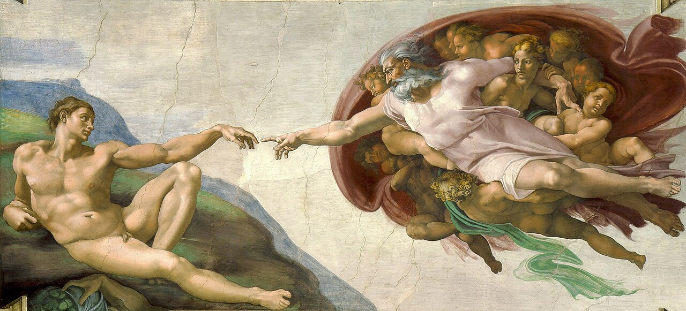
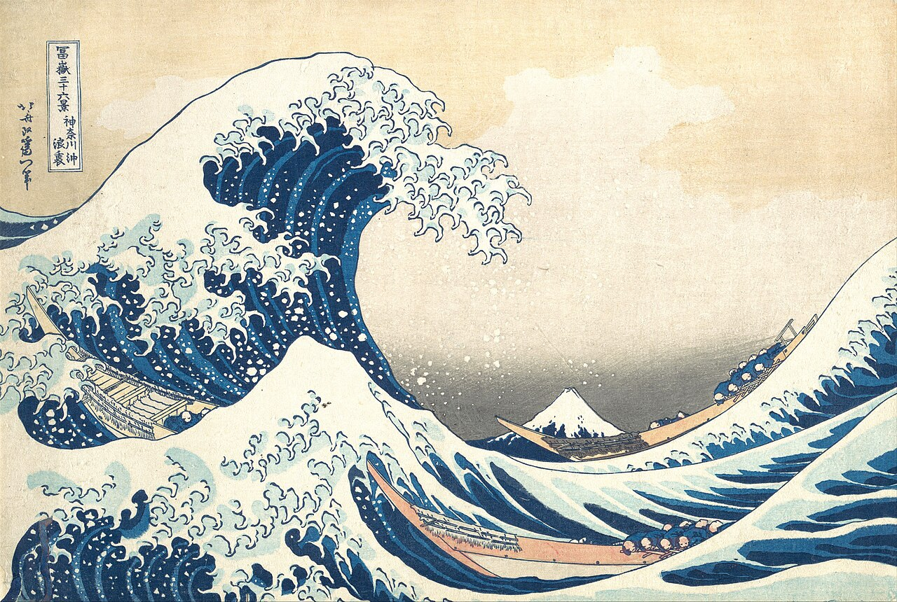
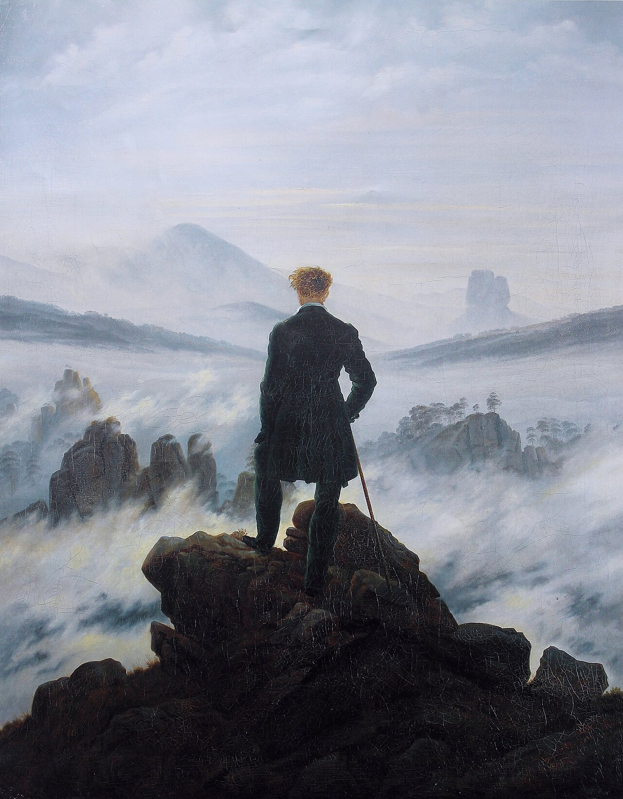

Calm systems for noisy problems.
I'm a software engineer in Finland. I build data pipelines, AI systems with a real test set behind them, and the production software around them, and I do the product work that decides what gets built.
Software Engineering, TAMKFinland
The flower is sand. Run your cursor through it and it scatters, then finds its shape again.

Most software is a handshake between people who don't share a language: a pharmacist and a database, a researcher and a funding portal, a restaurant and a phone screen. I work in the gap between them, and I measure whether it closed.
Work
Hover a project to raise its screen. Click through when it's public; scroll inside it when it isn't.
-
Aveksana
Engineering, product and growth
TechnicalBuilt the pipeline behind Artha, funding-call search: EU, Finnish and Swedish sources, normalised into one schema, stored in ChromaDB and searched semantically through FastAPI. Two Copilot Studio agents in production, one benchmarking university enrolment across Finland and Istanbul, one segmenting executive-education audiences.
TeamThe bridge between engineering, product and the people using it. Briefs arrived as one line ("we need an affiliate structure") and left as working systems.
GrowthVisit aveksana.comAffiliate and referral system, onboarding email flows, 20,000 people reached organically, a high volume of demos, and one resistant prospect turned into a university pilot.
-
BeaconMed
Product owner, architect and operator
TechnicalPakistani sales-tax law (Section 23) and DRAP rules decide what every invoice must carry, and expiry dates decide which batch ships first. Getting either wrong is a legal problem, so both live in the data model.
- Multi-tenant from day one, with Postgres row-level security so one distributor can never read another's data, even through a bug in the API.
- First-expiry-first-out batch allocation in the warehouse.
- An offline-first mobile app for salesmen in the field (Expo and WatermelonDB).
- Fastify API, Postgres 17, React admin; Docker Compose behind Caddy, Cloudflare in front, Tailscale for admin access, encrypted off-site backups. About €10.50 a month to run.
TeamAn AI coding agent writes most of the code. I write the requirements, design the system, review every pull request before it merges (about 85 so far) and run the server. The decisions stay with me.
GrowthIt replaces spreadsheets and an old desktop app at a working distributor, which keeps every feature honest. Two tenants from the first day, so the second customer costs nothing to onboard.
Code is private: it runs on a client's data.
-
Oppipolku
Product owner and delivery lead
TechnicalUniversities price continuing education from cost and launch it on instinct. The data that could warn them is public, scattered across hundreds of competitor pages. Oppipolku collects it and keeps every number traceable to a URL and a capture date.
- Scrapers into a database with provenance tables.
- Name normalisation and entity matching across institutions; ambiguous matches go to a person, never a guess.
- A taxonomy that says "unclassified" instead of inventing a category.
- Demand and pricing signals, then a one-page launch assessment.
- An assistant on top whose numbers all come from server-side tools, so it can't make one up.
TeamBuilt with two teammates on engineering and security review. I lead product, delivery, design and sales, and most of the work is mine.
GrowthOur design partner is an executive-education unit in Istanbul that once cancelled a programme after launch for lack of enrolment. A Finnish version, an assistant for open-education questions, is being tested with staff at TAMK.
Code is private: client work.
-
Dewon Fried Chicken
Design, build and growth
TechnicalSeven pages of plain HTML, CSS and JavaScript: no build step, no CDN, no third-party requests, strict security headers. Every business detail sits in one config file.
TeamWorked with the owners directly. They change hours, prices and links themselves now.
GrowthOpen the siteAn order chooser instead of a checkout (delivery apps, WhatsApp, takeaway, a table, group bookings), plus competitor and menu analysis, partner and influencer playbooks and a KPI sheet.
-
Asten coach finder
Solution design, closer to a feature hackathon than a design brief
TechnicalFilter on what makes a coach useless (sport, place, language, budget, open slots), rank everything else. A data model, a working filter-and-rank demo, and what changes between 5 coaches and 500.
TeamA team workshop. This solution and page are my own work.
GrowthOpen the interactive pageStarted from the athlete, the company's constraints and its stack, and measured success as athletes still training with their coach after eight weeks, not clicks.
-
Real Estate AI
Solo, for the AI and machine learning course
TechnicalRandom Forest against XGBoost on the same split. The forest won on every metric: R² 0.885 against 0.866. A Streamlit app predicts a fair price and ranks listings that look underpriced for a budget.
GrowthRead the codeThe useful part is a flaw. A neighbourhood the model never saw is quietly priced as whichever one sorts first alphabetically. It looks most confident for the people it knows least about, and that's why I care about evaluation.
-
SDLC governance
Built for my own projects
TechnicalA lifecycle in plain files, each deliverable with a rule the agent must prove from the repository before ticking it off. Packaged as a Claude Code plugin:
/governruns the current phase,/inspectaudits completeness and the OWASP Top 10, read-only.GrowthSee it on GitHubIt came out of running BeaconMed, where a fast, agreeable agent was the risk. I don't promote it; it's public in case it helps someone.
-
Cloudberry Scout
A weekend side project
TechnicalFuses Finnish open data into a ranked short list of mires: distance from drainage ditches, peatland type, Sentinel-2 openness and moisture, LiDAR flatness and hummocks, and this year's frost risk.
GrowthSee it on GitHubHonest about its ceiling: only female plants fruit and ripeness is timing, so the score is better odds per bog, not a full bucket.
Now
Artha, at Aveksana
A search engine for open research and innovation funding. It reads EU, Finnish and Swedish funding portals so researchers don't have to, and matches calls to what they actually work on.
I'm extending it to Austria and the UK, where the free APIs only list grants already awarded and the open calls have to be read from the pages themselves.

Why does a correct answer so often fail to help?
An AI model can be right and still useless: too long, too vague, nothing you can act on. I keep wondering whether that comes from how these models are trained to sound helpful, and whether you can separate three things we usually blur together: being correct, being concrete, and moving someone's problem forward.
If you can measure that difference, you can find where it comes from. That's the question I'm chasing.

How I work
Build it before I claim it
If a skill isn't on a real project yet, I build a small one first. The CV comes after the commit.
Measure the thing, not the demo
A demo shows the best case. A hundred checked questions and a list of the ways it fails show where it breaks, and that's what people need before they trust it.
Say the hard constraint early
Data that can't leave a factory, a tax law about invoices, a Finnish level of A1. Cheaper to design around on day one than to discover in week six.
Treat AI output like a pull request
I work with coding agents every day. Their code gets the same reading, testing and gates a teammate's would, and the decisions stay mine.
Background
International Baccalaureate Diploma
The IB asks for more than grades. Its core is Theory of Knowledge, which makes you question how you know what you claim to know; the Extended Essay, a piece of original research written at seventeen (mine earned an A); and Creativity, Activity, Service, real hours spent on art, sport and other people.
It's an education built on the idea that a good thinker is first a whole person, curious across languages, cultures and disciplines. I still work that way: an engineer who also sells, designs, writes and listens.
Software Engineering
Tampere University of Applied Sciences, Finland. Graduating 2027.
Languages and tools
Python, Java, SQL, JavaScript and Node.js, React, HTML and CSS. PostgreSQL, ChromaDB, Docker, FastAPI, scikit-learn, GeoPandas. Finnish: learning, A1.
Before software
Social media management for a consultancy, and a student team I led through a task-manager MVP with Jira and Confluence.
Archive
The first things I built, from early courses. Small games, first web pages, exercises that taught me more by breaking than by working. The wind has had them for a while now.
- Small games in JavaCourse projects, object-oriented and very proud of it
- First web pagesHTML, CSS and JavaScript, before I knew what a build step was
- C++ exercisesPointers, classes, and a lot of segmentation faults

Got a noisy problem? Tell me about it.
Thanks for walking all the way down here.